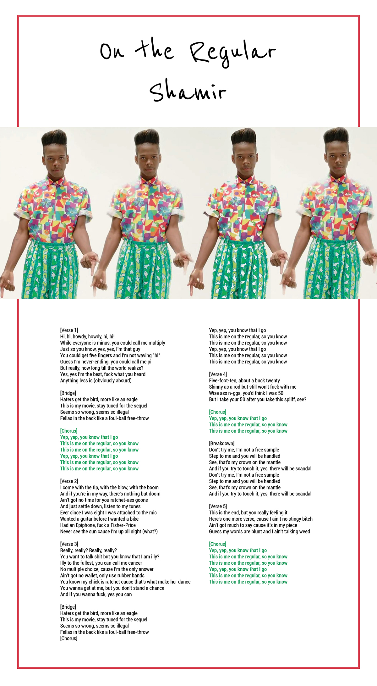
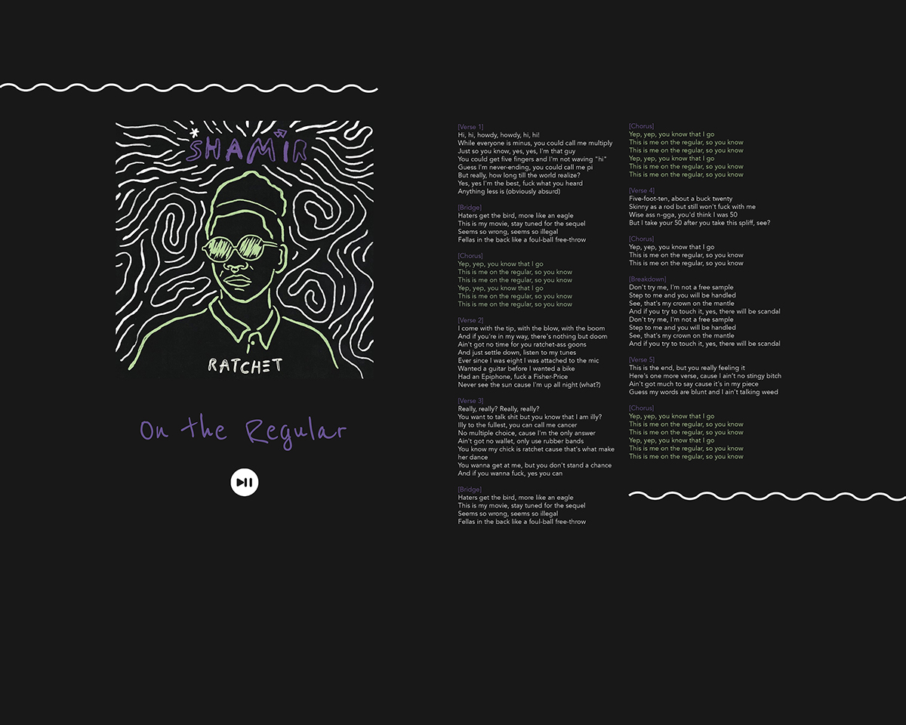

My original mockup was modeled after the music video for On the Regular. I wasn't satisfied with it, so I completely changed my concept to be based after the album art instead. Pretty much the only thing I kept was the typeface Reenie Beanie for the title. My partners were Jane, Mimi, and Marina.
Changes:
- changed from portrait to landscape orientation
- changed organization
- added grid
- changed main image from a still from the music video to the "Ratchet" album art
- changed background color from white to almost-black to blend in with the album art
- changed the body type color from black with green and red accents to white with purple and light green accents (eyedropped from the album art)
- changed the body typeface from Roboto Condensed to Avenir
- added white squiggles
- added a play/pause button/audio player
Version 1:

Version 2:
